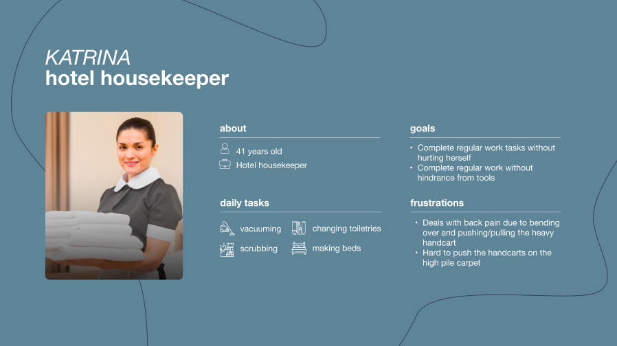
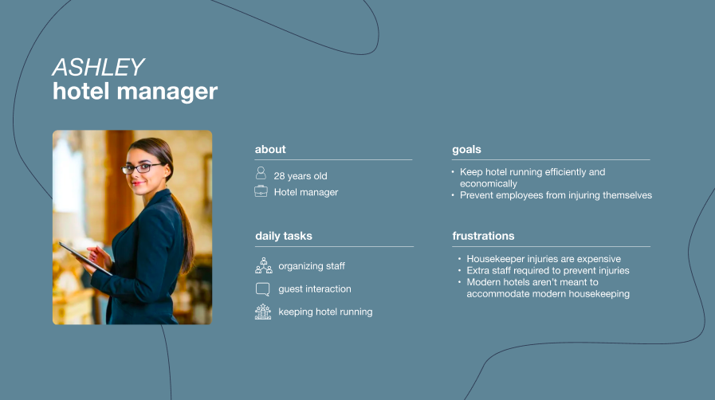
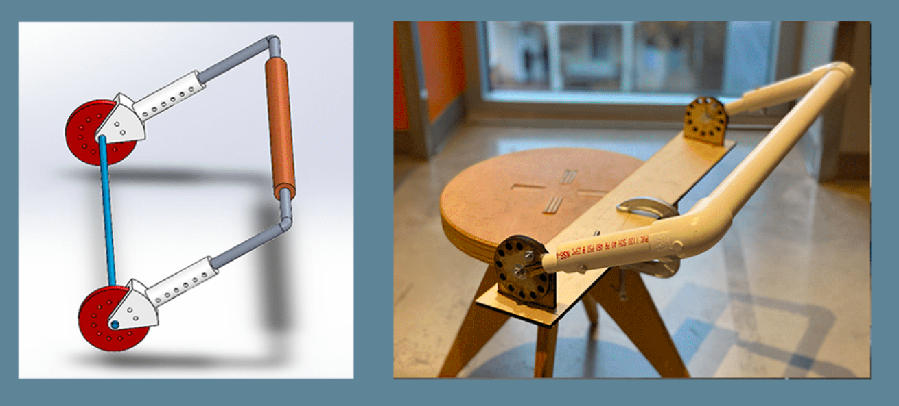
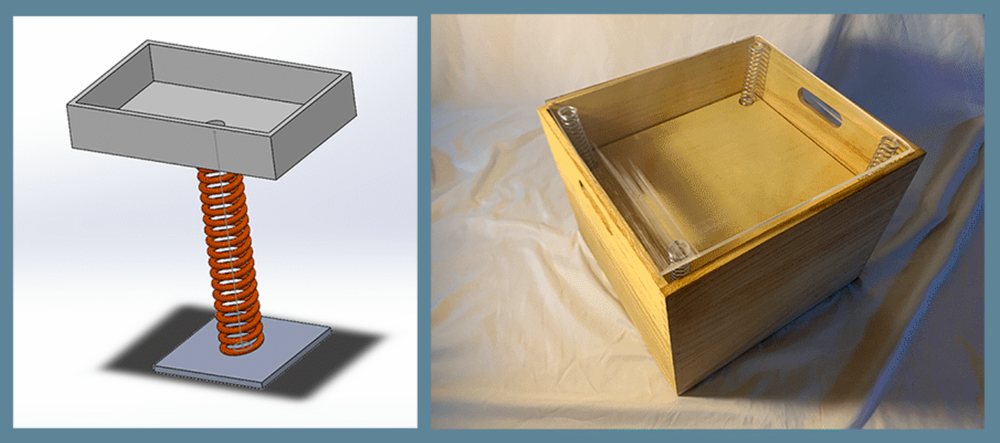
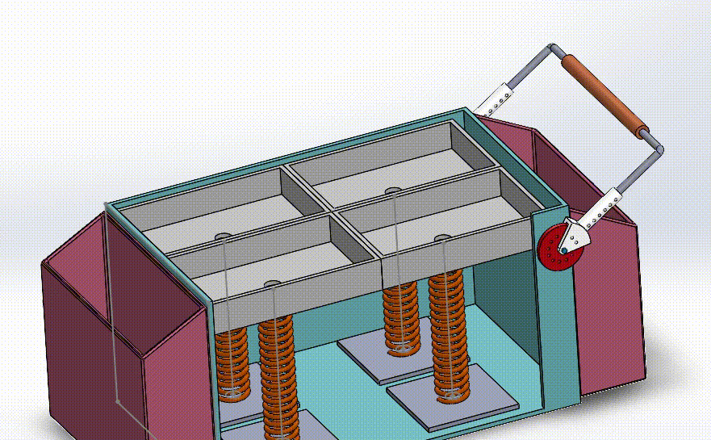
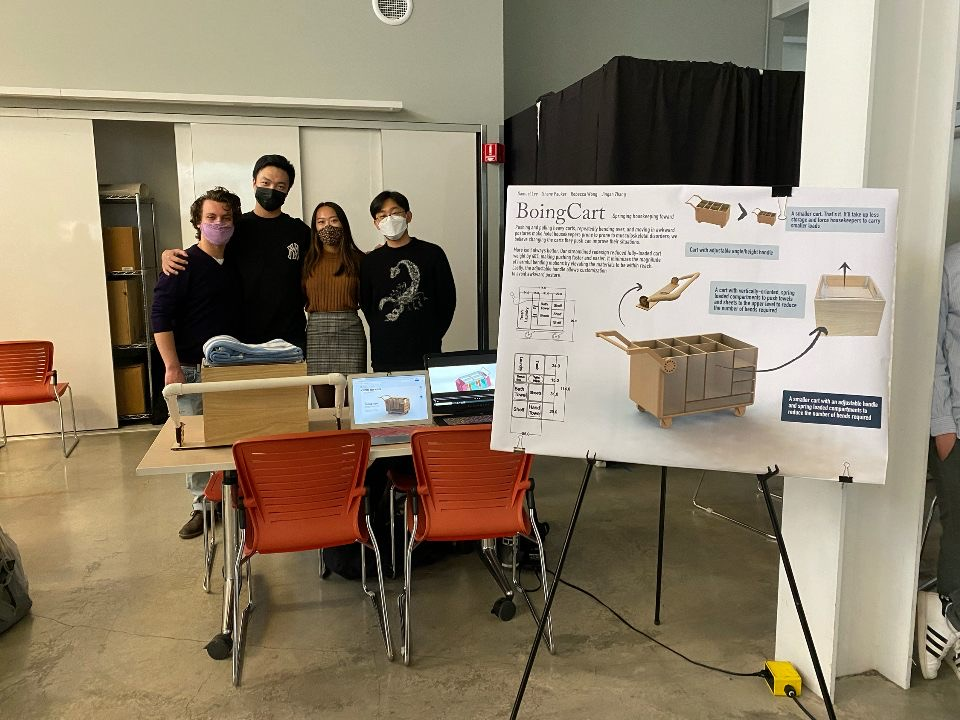

Rebecca Wong |

|

Boing-Cart
user persona representing learnings from user research
user persona representing learnings from user research
physical and 3D model prototypes of adjustable handle
physical and 3D model prototypes of spring loaded shelf

product features

product features
product features
The project team at our design showcase
For my semester long project for the Human Centered Design Methods course at Berkeley, I worked within a team of four to redesign the housekeeping cart used in hotels. Housekeepers are prone to musculoskeletal disorders and the heavy load of the cart, repetitive bending motions to access the shelves, and awkward posture are risk factors. As a result, we set out to develop a product that reduces the frequency of injuries that hotel housekeepers suffer when transporting equipment and cleaning.
We conducted user research through 1:1 interviews with hotel management and housekeeping, research into musculoskeletal disorders, and task analysis. We identified that a major painpoint was that current housekeepers overload their carts to avoid restocking, and that overstretching and repetitive bending was a significant factor in causing injury. In the user research stage, I worked on the task analysis, as I had taken a course before centering on ergonomics design and identifying musculoskeletal risk.
From there we generated approximately 70 concepts, some in redesigning the cart entirely, some modifying it, and some products that skewed more dramatically in not using the cart at all. We clustered our ideas and mapped them according to what would be most liked by our 2 central stakeholders, hotel management and housekeepers, keeping only those that were liked by both. I thought that this mapping was extremely beneficial in prioritizing concepts and not forgetting to center on the user needs. We then used a weighted matrix to further converge on ideas.
Our final concept was a smaller cart to reduce load, with spring loaded shelves that raises items to the top of the cart to minimize bends, and an adjustable handle.
We then prototyped components of the cart: a spring loaded shelf and adjustable handle. We tested the spring loaded shelf for technical feasibility, ensuring that it would be able to support a reasonable amount of weight. We tested the adjustable handle on different users and used their feedback to determine whether the design was intuitive to adjust and comfortable to use ergonomically.
Ultimately, our streamlined redesign was able to reduce fully loaded cart weight by 40% with its smaller dimensions, making pushing easier and faster. It also minimizes the magnitude of harmful bending motions by elevating materials to be within reach. Lastly, the adjustable handle allows customization to avoid awkward posture.
Given how mechanically focused our product was, I wish that we had a bit more time to prototype and receive feedback. If we had more time I would have liked to be able to do some user testing on the dimensions of the cart, as we formed them off of our research and some assumptions but were not able to properly test it. I also would have liked to test the adjustable handle further and see if housekeepers remember to adjust it and/or are able to adjust it to an ergonomically advantageous level without prompting, as all our users were prompted to adjust it, and I fear that this feature may become forgotten. Lastly, I would have liked to take our product to a hotel and get some feedback from the housekeepers and hotel management, but we unfortunately did not have the time to do so.